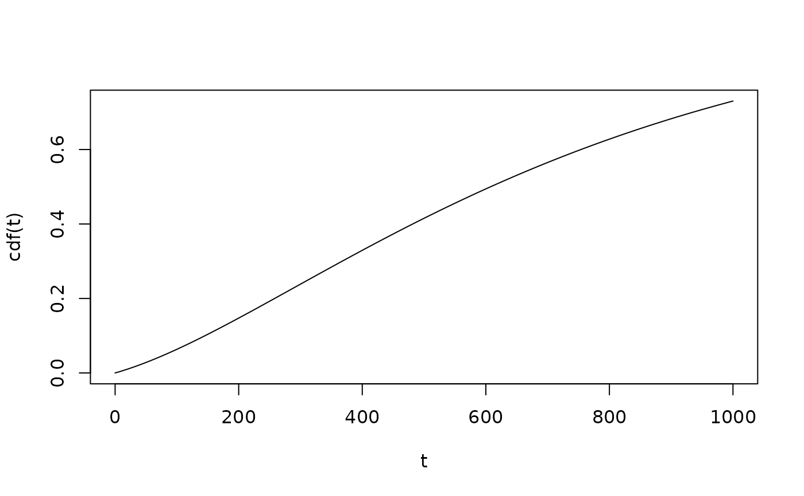

Fast implementation of cumulative density function, survival function, ... for scenarios with progression
Source:R/pch_functions_progression.R
progression_cdf_fun.RdFast implementation of cumulative density function, survival function, ... for scenarios with progression
Usage
progression_cdf_fun(hazard_before, prog_rate, hazard_after)
progression_surv_fun(hazard_before, prog_rate, hazard_after)
progression_pdf_fun(hazard_before, prog_rate, hazard_after)
progression_haz_fun(hazard_before, prog_rate, hazard_after)
progression_quant_fun(hazard_before, prog_rate, hazard_after)Arguments
- hazard_before
hazard for death before progression
- prog_rate
hazard rate for progression
- hazard_after
hazard for death after progression
Value
A function with one parameter, a vector of times/probabilities where the function should be evaluated.
Details
Calculations are done by viewing the disease process as a three state (non-progressed disease, progressed disease, death) continuous time markov chain. Calculations can then easily be done using the matrix exponential function and Q-matrices.
Functions
progression_cdf_fun(): cumulative density function for progression scenarioprogression_surv_fun(): survival function for progression scenarioprogression_pdf_fun(): probability density function for progression scenarioprogression_haz_fun(): hazard function for progression scenarioprogression_quant_fun(): quantile function for progression scenario
Examples
cdf <- progression_cdf_fun(
hazard_before = m2r(48),
prog_rate = m2r(18),
hazard_after = m2r(6)
)
t <- 0:1000
plot(t, cdf(t), type="l")

surv <- progression_surv_fun(
hazard_before = m2r(48),
prog_rate = m2r(18),
hazard_after = m2r(6)
)
t <- 0:1000
plot(t, surv(t), type="l")
pdf <- progression_pdf_fun(
hazard_before = m2r(48),
prog_rate = m2r(18),
hazard_after = m2r(6)
)
t <- 0:1000
plot(t, pdf(t), type="l")
haz <- progression_haz_fun(
hazard_before = m2r(48),
prog_rate = m2r(18),
hazard_after = m2r(6)
)
t <- 0:1000
plot(t, haz(t), type="l")
quant <- progression_quant_fun(
hazard_before = m2r(48),
prog_rate = m2r(18),
hazard_after = m2r(6)
)
p <- seq(0,0.99, by=.01)
plot(p, quant(p), type="l")